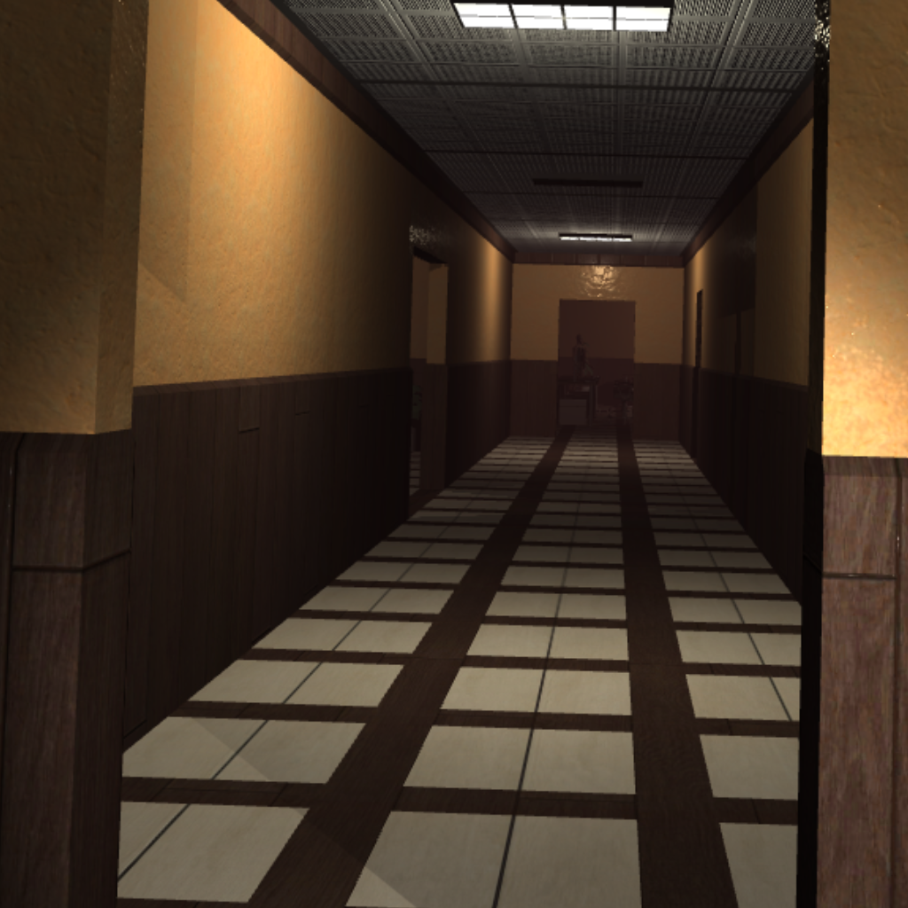

Overview
This research thesis explores the integration of biofeedback technology in survival horror games. The study investigates how physiological data such as heart rate and skin conductance can be used to dynamically adjust game difficulty and atmospheric elements, creating a more personalized and immersive horror experience.
Research Question
The central question of this thesis is: "What's the impact of biofeedback in survival horror games?" This explores how real-time physiological feedback can enhance player immersion and fear responses in horror game environments.
Methodology
The research involved developing a prototype horror game that integrates biofeedback sensors. Player physiological responses were measured and analyzed to understand how biofeedback-driven game adaptations affect the overall gaming experience.
Resources
Thesis Document
Read the complete thesis paper exploring biofeedback integration in survival horror games.
Download Thesis (PDF)Source Code
Explore the implementation and prototype developed for this research project.
View on GitHubKey Findings
- Biofeedback integration can significantly enhance player immersion in horror games
- Dynamic difficulty adjustment based on physiological data creates more personalized experiences
- Heart rate monitoring proves effective for detecting player fear responses
- Implementation challenges include sensor accuracy and response latency